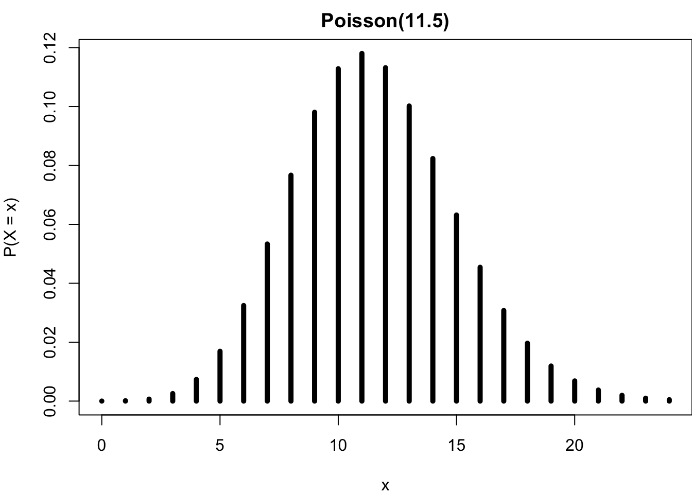

| x | 0 | 1 | 2 |
| P(X = x) | 0.25 | 0.5 | 0.25 |
10 Discrete Probability Distributions
For this and next chapters, we learn about probability distributions. In this chapter, we focus on discrete probability distributions for discrete random variables. We first learn what is a discrete probability distribution, followed by the two popular discrete distributions, binomial and Poisson distributions. We will learn how to use R to calculate probabilities from the distributions.
10.1 Probability Mass Function
A discrete random variable uses a probability function or probability mass function (pmf) to describe its randomness, and the pmf is its associated discrete probability distribution. The probability mass function of a discrete random variable \(X\) is a function of \(X\), denoted \(P(X = x)\) or \(p(x)\) for short, that assigns a probability to every possible number \(x\) of \(X\).
The probability distribution for a discrete \(X\) displays its probability function. The display can be a table, graph or mathematical formula of \(P(X = x)\) as long as every possible value of \(X\) has its own corresponding probability. We illustrate the probability function using an example of tossing a coin.
Example:ü™ôü™ô Toss a fair coin twice independently where \(X\) is the number of heads.
With the example, first the possible values of \(X\) by its definition are 0, 1, and 2. Both results can be tails and \(X = 0\). We can have one heads and one tails, or \(X=1\), and we can have two heads showing up \(X = 2\). We cannot have \(X=3\) or any number greater than 2 because the coin is tossed twice only. Also, the possible value of \(X\) cannot be any non-integer values, like 1.5 or 0.8 because \(X\) is the number times, and it is discrete.
To present its probability distribution in a table, for each possible value of \(X\), we get to compute its probability, then list all probabilities as the table below.
Let me show the calculation of the probabilities.
\(P(X = 0) = P(\{\text{tails}, \text{tails}\}) = P(\text{tails})P(\text{tails}) = (0.5)(0.5) = 0.25.\)
\(\begin{align*} P(X = 1) &= P(\{\text{heads}, \text{tails}\} \cup \{\text{tails}, \text{heads}\})\\ &= P(\{\text{heads}, \text{tails}\}) + P(\{\text{tails}, \text{heads}\}) \\ &= (0.5)(0.5) + (0.5)(0.5) = 0.5. \end{align*}\)
\(P(X = 2) = P(\{\text{heads}, \text{heads}\}) = P(\text{heads})P(\text{heads}) = (0.5)(0.5) = 0.25.\)
We can also display the probability distribution using graphs. We put possible values of \(X\) in the x-axis, and the y-axis stands for the probability \(P(X=x)\). Then for each \(x\), we draw a vertical bar at \(X=x\) from \(y = 0\) to \(y = P(X=x)\). Figure 10.1 shows the discrete probability distribution of two coin flips as a graph.
If you love math, you can specify the probability distribution using mathematical formula: \[ P(X = x)= \begin{cases} {2 \choose x}\left( \frac{1}{4}\right), ~~ x = 0, 1, 2,\\ 0, ~~ \text{otherwise}, \end{cases} \] where \({2 \choose x} = \frac{2!}{x!(2-x)!}\). Keep in mind that where \(x\) takes values or the support of \(x\) should be clearly specified.
Now let’s talk a little bit about the properties of pmf.
\(0 \le P(X = x) \le 1\) for every value \(x\) of \(X\). Remember that \(P(X = x)\) is a probability of some event, for example \(P(X = 0) = P(\{\text{tails}, \text{tails}\})\), and we’ve learned that \(0 \le P(A) \le 1\) for any event \(A\).
The probabilities for a discrete \(X\) are additive because \(\{X = a\}\) and \(\{X = b\}\) are disjoint for any possible values \(a \ne b\). In our coin tossing example, \(\{X = 0\}\) and \(\{X = 1\}\) are disjoint because when tossing a fair coin two times independently, we cannot have no heads and one heads results at the same time. Therefore, \[P(X = 0 \text{ or } 1) = P(\{X = 0\} \cup \{X = 1\}) = P(X = 0) + P(X = 1).\]
\(\sum_{x}P(X=x) = 1\), where \(x\) assumes all possible values. In our coin tossing example, \(P(X = 0) + P(X = 1) + P(X = 2) = 0.25 + 0.5 + 0.25 = 1\). The reason is that \(\{X = 0\}\), \(\{X = 1\}\), and \(\{X = 2\}\) form a partition of the entire sample space, where in the example \(\mathcal{S} = \left\{ \{\text{tails}, \text{tails}\}, \{\text{heads}, \text{tails}\}, \{\text{tails}, \text{heads}\}, \{\text{heads}, \text{heads}\} \right\}\). Therefore, \(\sum_{x}P(X=x) = P(\mathcal{S}) = 1\).
Mean
Remember that a probability distribution describes the randomness pattern of a random variable \(X\). Given its distribution, people are usually interested in its average value or central tendency and how uncertain it is or its dispersion.
For the central tendency, we consider the mean of a discrete variable \(X\). Suppose \(X\) takes values \(x_1, \dots, x_k\) with probabilities \(P(X = x_1), \dots, P(X = x_k)\). The mean or expected value of \(X\), written as \(E(X)\), is the sum of each outcome multiplied by its corresponding probability: \[E(X) := x_1 \times P(X = x_1) + \dots + x_k \times P(X = x_k) = \sum_{i=1}^kx_iP(X=x_i)\]
The Greek letter \(\mu\) may also be used in place of the notation \(E(X)\).
The mean of a discrete random variable \(X\) is actually a weighted average of \(x\) weighted by their corresponding probability.
If you calculate it correctly, your answer should be one. It tells us that if we toss a fair coin twice independently, on average we’ll see one heads showing up.
Variance
As sample variance calculated from the sample data, we calculate the variance of the random variable \(X\) to quantify its variability and dispersion. Suppose \(X\) takes values \(x_1, \dots , x_k\) with probabilities \(P(X = x_1), \dots, P(X = x_k)\) and expected value \(\mu = E(X)\). The variance of \(X\), denoted by \(Var(X)\) or \(\sigma^2\), is
\[\small \begin{align*} Var(X) &:= (x_1 - \mu)^2 \times P(X = x_1) + \dots + (x_k - \mu)^2 \times P(X = x_k) \\ &= \sum_{i=1}^k(x_i - \mu)^2P(X=x_i) \\ &= E[(X-\mu)^2] \end{align*}.\]
The standard deviation of \(X\), \(\sigma\), is the square root of the variance.
Intuitively, the variance of a discrete random variable \(X\) is the weighted sum of squared deviation from the mean weighted by probability values. It is the mean squared distance from the mean.
Warning
- The mean (\(\mu\)) and variance (\(\sigma^2\)) of a random variable or probability distribution are not the same as the sample mean (\(\overline{x}\)) and sample variance (\(s^2\)) calculated from the sample data. Their main difference will be discussed in the Part Inference.
We have learned the general discrete probability distributions. Next we are going to learn two popular discrete probability distributions, binomial and Poisson distribution.
10.2 Binomial Distribution
Binomial Experiment and Random Variable
Binomial distribution is generated from the so-called binomial experiment that has the following properties:
üëâ The experiment consists of a fixed number of identical trials, say \(n\). That is, \(n\) is pre-specified before the experiment is conducted, and remains unchanged while the experiment is in progress. Also, all the trials or repetitions in the experiment should be performed with exactly the same condition or procedure.
üëâ Each trial results in one of exactly two outcomes. In practice, we use success (S) and failure (F) to represent the two outcomes. The word success just means one of the two outcomes and does not necessarily mean something good. üò≤ Depending on your research question, you could define Drug abuse as success and No drug abuse as failure.
üëâ Trials are independent, meaning that the outcome of one trial does not affect the outcome of any other trial.
üëâ The probability of success, say \(\pi\), is constant for all trials.
If a binomial experiment is conducted, and \(X\) is defined as the number of successes observed in \(n\) trials , then \(X\) is a binomial random variable.
Distribution
The probability function \(P(X = x)\) of a binomial variable \(X\) can be fully determined by the number of trials \(n\) and the probability of success \(\pi\). Once \(n\) and \(\pi\) are fixed and known, we know exactly what the distribution looks like, and we can form a table, graph, and provide a mathematical formula of the binomial probability function. A different \((n, \pi)\) pair generates a different binomial probability distribution. The value(s) that determines an entire probability distribution is called the parameter of the distribution. Therefore, \(X\) is said to follow a binomial distribution with parameters \(n\) and \(\pi\), written as \(\color{blue}{X \sim binomial(n, \pi)}\).
The binomial probability function is \[ \color{blue}{P(X = x \mid n, \pi) = \frac{n!}{x!(n-x)!}\pi^x(1-\pi)^{n-x}, \quad x = 0, 1, 2, \dots, n}\]
It is not that important to memorize the formula as nowadays we use computing software to obtain \(P(X = x)\) for any \(x\). Notice that the maximal possible number of \(x\) is \(n\), the number of trials. We cannot have 5 successes when there are only 4 trials in the experiment. Second, when both \(n\) and \(pi\) are known and fixed, with a value of \(x\), everything in the formula is known, and the probability can be calculated.
It can be shown that the binomial distribution has mean \(\mu = E(X) = n\pi\) and variance \(\sigma^2 = Var(X) = n\pi(1-\pi)\).
To answer this question, we need to check if the experiment satisfies the four properties.
The number of trials is 2, and the two trials, tossing a fair coin are identical (if you are not nitpicking).
Each trial results in one of exactly two outcomes, heads or tails.
Trials are independent. Well it’s hard to say, but at least they are nearly independent.
The probability of heads is 1/2 for all trials because we got a fair coin.
So, is \(X\) a binomial random variable? You tell me.
Example
Assume that 20% of all drivers have a blood alcohol level above the legal limit. For a random sample of 15 vehicles, compute the probability that:
Exactly 6 of the 15 drivers will exceed the legal limit.
Of the 15 drivers, 6 or more will exceed the legal limit.

Suppose it’s a binomial experiment with \(n = 15\) and \(\pi = 0.2\). Let \(X\) be the number of drivers exceeding limit. Then \(X \sim binomial(15, 0.2)\). Therefore,
\[ \color{blue}{P(X = x \mid n=15, \pi=0.2) = \frac{15!}{x!(15-x)!}(0.2)^x(1-0.2)^{15-x}, \quad x = 0, 1, 2, \dots, 15.}\]
Since we know the value of parameter \(n\) and \(\pi\), the entire binomial distribution can be described, as shown in Figure 10.2.

To answer the first question, we just need to calculate \(P(X = 6)\) using the formula: \[\small P(X = 6) = \frac{n!}{x!(n-x)!}\pi^x(1-\pi)^{n-x} = \frac{15!}{6!(15-6)!}(0.2)^6(1-0.2)^{15-6} = 0.043\]
The second question asks for \(P(X \ge 6)\) because of “6 or more will exceed the legal limit”. One can calculate the probability like \(\small P(X \ge 6) = P(X = 6 \cup X = 7 \cup \cdots \cup X = 15) = p(6) + \dots + p(15)\). It requires 10 probability calculations. One simpler way of obtaining the probability is to consider the complement set of \(\{X \ge 6\}\) which is \(\{X \le 5\}\). Then use the property that \(P(A) = 1 - P(A^c)\) to get the answer. So we can do the following \(P(X \ge 6) = 1 - P(X \le 5) = 1 - (p(0) + p(1) + \dots + p(5)) = 0.0611\). In this case, we only need to calculate 6 probabilities from the formula.
Well I believe you’ve seen how tedious calculating a binomial probability is! It is so true especially when \(n\) is relatively large. No worries. We are living in the 21th century with lots of advancing computing technology. We’ll never do such calculation by hand, and we’ll learn to compute them using R!
In practice, we are not gonna calculate probabilities of binomial or other commonly used probability distributions. Instead, we use computing software. In R we can use dpqr family functions to calculate probabilities or generate values from the distributions. In general, for some distribution, short for dist, R has the following functions
-
d
dist(x, ...): calculate density value \(f(x)\) or probability value \(P(X = x)\). -
p
dist(q, ...): calculate \(P(X \le q)\). -
q
dist(p, ...): obtain quantile of probability \(p\). -
r
dist(n, ...): generate \(n\) random numbers.
When we use these functions, the dist is replaced with the shortened name of the distribution we consider. For example, we use dbinom(x, ...) to do the calculation for the binomial distribution.
The function ddist(x, ...) gives us the probability density value \(f(x)\) if the distribution is continuous, and it is why the function starts with d. The continuous probability distribution will be discussed in Chapter 11 in detail. If the distribution is discrete, like binomial, it gives us the value \(P(X = x)\) where \(X\) follows the distribution being considered, and \(x\) is the value specified in the first argument of the function.
For the binomial distribution, we use dbinom(x, size, prob) to compute \(P(X = x)\), where size is the number of trials and prob is the probability of success. Besides \(x\), we need to provide the values of size and prob because remember that they are the parameters of the binomial distribution. Without them, we cannot have a specific binomial distribution, and its probability cannot be calculated.
To obtain \(P(X = 6)\) where \(X \sim binomial(n=15, \pi=0.2)\), in R, we do
## 1. P(X = 6)
dbinom(x = 6, size = 15, prob = 0.2) [1] 0.04299262To answer the second question \(P(X \ge 6)\), we can use the function pbinom(q, size, prob) that calculates \(P(X \le q)\) for \(X \sim bionomial(n = \texttt{size}, \pi = \texttt{prob})\). Notice that \(P(X >= 6) = 1 - P(X <= 5)\), so in R, we can do
## 2. P(X >= 6) = 1 - P(X <= 5)
1 - pbinom(q = 5, size = 15, prob = 0.2) [1] 0.06105143By default, the function pbinom(q, size, prob) calculates the probability \(P(X \le q)\) which is the left or lower tail part of the distribution. The function provides an argument lower.tail that is logical, and is TRUE by default. When we set lower.tail = FALSE in the function, it will instead calculate \(P(X > q)\) which is the right or upper tail part of the distribution. Since \(P(X \ge 6) = P(X > 5)\), in R we can do
## 2. P(X >= 6) = P(X > 5)
pbinom(q = 5, size = 15, prob = 0.2, lower.tail = FALSE) [1] 0.06105143Notice that we use q = 5 instead of q = 6 because we want \(P(X > 5)\). Also, lower.tail = FALSE is added into the function, and the probability value is the same as the value before.
Below is an example of how to generate the binomial probability distribution as a graph.
plot(x = 0:15, y = dbinom(0:15, size = 15, prob = 0.2),
type = 'h', xlab = "x", ylab = "P(X = x)",
lwd = 5, main = "Binomial(15, 0.2)")
Here a sequence of integers 0 to 15 are created and put in the x-axis. Then dbinom(0:15, size = 15, prob = 0.2) is used to create probabilities of \(binomial(15, 0.2)\) for each integer. The vertical bar geometry comes from the argument type = 'h' standing for “histogram”.1
Since \(n = 15\) and \(\pi = 0.2\), the mean is \((15)(0.2) = 3\). For the binomial distribution, it means that the number of success is more likely to be happened around \(x = 3\). It is very uncommon to see that more than 10 drivers have alcohol level above the legal limit.
In practice, we are not gonna calculate probabilities of binomial or other commonly used probability distributions. Instead, we use computing software. In Python we can use the methods in the scipy.stats.binom module to calculate probabilities or generate values from the distributions. In general, for some distribution, short for dist, Python has the following functions
-
dist.pmf(k, ...): calculate probability value \(P(X = k)\).-
pmfmeans probability mass function.
-
-
dist.pdf(x, ...): calculate probability density \(f(x)\).-
pdfmeans probability density function.
-
-
dist.cdf(k, ...): calculate \(P(X \le k)\).-
cdfmeans cumulative distribution function.
-
-
dist.sf(k, ...): calculate \(P(X > k)\).-
sfmeans survival function.
-
-
dist.ppf(q, ...): obtain quantile of probability \(q\).-
ppfmeans percent point function.
-
-
dist.rvs(n, ...): generate \(n\) random numbers.-
rvsmeans random variables.
-
When we use these functions, the dist is replaced with the shortened name of the distribution we consider. For example, we use binom.pmf(k, ...) to do the calculation for the binomial distribution.
For the binomial distribution, we use binom.pmf(k, n, p) to compute \(P(X = k)\), where n is the number of trials and p is the probability of success. Besides k, we need to provide the values of n and p because remember that they are the parameters of the binomial distribution. Without them, we cannot have a specific binomial distribution, and its probability cannot be calculated.
To obtain \(P(X = 6)\) where \(X \sim binomial(n=15, \pi=0.2)\), in Python, we do
import numpy as np
import matplotlib.pyplot as plt
from scipy.stats import binom# Binomial distribution calculations
# 1. P(X = 6)
binom.pmf(k=6, n=15, p=0.2)0.04299262263296005To answer the second question \(P(X \ge 6)\), we can use the function binom.cdf(k, n, p) that calculates \(P(X \le k)\) for \(X \sim bionomial(n = \texttt{n}, \pi = \texttt{p})\). Notice that \(P(X >= 6) = 1 - P(X <= 5)\), so in Python, we can do
# 2. P(X >= 6) = 1 - P(X <= 5)
1 - binom.cdf(k=5, n=15, p=0.2)0.06105142961766408The function binom.cdf(q, n, p) calculates the probability \(P(X \le k)\) which is the left or lower tail part of the distribution. We can use binom.sf(q, n, p) to calculate \(P(X > q)\) which is the right or upper tail part of the distribution. Since \(P(X \ge 6) = P(X > 5)\), in Python we can do
# Alternatively, using the upper tail probability
binom.sf(5, n=15, p=0.2)0.061051429617664056Notice that we use k=5 instead of k=6 because we want \(P(X > 5)\). The probability value is the same as the value before.
Below is an example of how to generate the binomial probability distribution as a graph. We use the stem plot plt.stem().
np.arange(0, 16)array([ 0, 1, 2, 3, 4, 5, 6, 7, 8, 9, 10, 11, 12, 13, 14, 15])plt.stem(np.arange(0, 16), binom.pmf(np.arange(0, 16), n=15, p=0.2),
basefmt=" ")
plt.xlabel("x")
plt.ylabel("P(X = x)")
plt.title("Binomial(15, 0.2)")
plt.show()Here a sequence of integers 0 to 15 are created and put in the x-axis. np.arange(0, 16) is a way to generate a sequence of numbers from 0 to 15. Again 0 is included but 16 is not. Then binom.pmf(np.arange(0, 16), n=15, p=0.2) is used to create probabilities of \(binomial(15, 0.2)\) for each integer.
Since \(n = 15\) and \(\pi = 0.2\), the mean is \((15)(0.2) = 3\). For the binomial distribution, it means that the number of success is more likely to be happened around \(x = 3\). It is very uncommon to see that more than 10 drivers have alcohol level above the legal limit.
10.3 Poisson Distribution
Poisson Random Variables
If we want to count the number of occurrences of some event2 over a unit of time or space/region/volume and observe its associated probability, we could consider the Poisson distribution. For example,
- The number of COVID patients arriving at ICU in one hour
- The number of Marquette students logging onto D2L in one day
- The number of dandelions per square meter on Marquette’s campus
Let \(X\) be a Poisson random variable. Then \(\color{blue}{X \sim Poisson(\lambda)}\), where \(\lambda\) is the parameter representing the mean number of occurrences of the event in some time interval or region. The Poisson probability function is
\[\color{blue}{P(X = x \mid \lambda) = \frac{\lambda^x e^{-\lambda}}{x!}, \quad x = 0, 1, 2, \dots}\]
Again, the parameter \(\lambda\) determines the shape of the distribution. The constant \(e\) is the Euler’s number that is approximately \(2.7182818284\). \(x! = x \times (x-1) \times \cdots \times 2 \times 1\) and \(0! = 1\). Note that the possible value of \(x\) could be any positive integer. Theoretically speaking, there is no upper limit for the number of occurrences of any event. No worries. You don’t need to memorize the formula, but it’s good to recognize it.
One interesting property of the Poisson distribution is that its mean and variance are both equal to its parameter \(\lambda\). So a \(Poisson(5)\) distribution has mean and variance being equal to 5.
Assumptions and Properties of Poisson Variables
As the binomial distribution, the Poisson distribution comes from the Poisson experiment having the following properties and assumptions:
üëâ Events occur one at a time; two or more events do not occur at the same time or in the same space or spot. For example, one cannot say two patients arrived at ICU at the same time. There must be a way to separate one event from the other, and one can always know which patient arrives at ICU earlier.
üëâ The occurrence of an event in a given period of time or region of space is independent of the occurrence of the event in a nonoverlapping time period or region of space. For example, number of patients arriving at ICU between 2 PM and 3 PM has nothing to do with the number of patients arriving at ICU between 8 PM and 9 PM because the two time periods have no overlap.
üëâ \(\lambda\) is constant for any period or region. For example, the mean number of patients arriving at ICU between 2 PM and 3 PM is the same as the mean number of patients arriving at ICU between 8 PM and 9 PM. This assumption is pretty strong, and usually violated in reality. If you want to use Poisson distribution to build your statistical model, use it with additional care.
Example
Last year there were 4200 births at the University of Wisconsin Hospital. Let \(X\) be the number of births in a given day at the center, and assume \(X \sim Poisson(\lambda)\). Find
\(\lambda\), the mean number of births per day.
the probability that on a randomly selected day, there are exactly 10 births.
\(P(X > 10)\)?

\(\small \lambda = \frac{\text{Number of birth in a year}}{\text{Number of days}} = \frac{4200}{365} = 11.5.\) There are totally 4200 births in one year, so on average there are 11.5 per day. According to how we define \(X\), the time unit is a day, not a year. The parameter \(\lambda\) and \(X\) should have the same time unit.
\(\small P(X = 10 \mid \lambda = 11.5) = \frac{\lambda^x e^{-\lambda}}{x!} = \frac{11.5^{10} e^{-11.5}}{10!} = 0.113.\)
\(\small P(X > 10) = p(11) + p(12) + \dots + p(20) + \dots\) (No end!) \(\small P(X > 10) = 1 - P(X \le 10) = 1 - (p(1) + p(2) + \dots + p(10))\).
Did you see how tedious it is to calculate the Poisson probabilities even using a calculator? I know you are waiting for R/Python implementation!
Instead of using dbinom() and pbinom(), for Poisson distribution, we replace binom with pois, and use dpois(x, lambda) and ppois(q, lambda) to calculate the probabilities.
With lambda being the mean of Poisson distribution, and \(X\sim Poisson(\lambda)\), we use
dpois(x, lambda)to compute \(P(X = x \mid \lambda)\)ppois(q, lambda)to compute \(P(X \le q \mid \lambda)\)ppois(q, lambda, lower.tail = FALSE)to compute \(P(X > q \mid \lambda)\)
## 3.
## P(X > 10) = 1 - P(X <= 10)
1 - ppois(q = 10, lambda = lam) [1] 0.5990436## P(X > 10)
ppois(q = 10, lambda = lam,
lower.tail = FALSE) [1] 0.5990436Below is an example of how to generate the Poisson probability distribution as a graph.
plot(0:24, dpois(0:24, lambda = lam), type = 'h',
lwd = 5, ylab = "P(X = x)", xlab = "x",
main = "Poisson(11.5)")
Be careful that the Poisson \(X\) has no upper limit; the graph is truncated at \(x = 24\). Strictly speaking, the graph does not accurately display the \(Poisson(11.5)\) distribution. Since the mean is 11.5, we know that it is very unlikely to have a very large \(x\), that is \(P(X = x)\) is very close to zero for \(x > 25\). As the binomial distribution, the number of occurrences is more likely to be around its mean number 11.5, and the chance is decaying as the number is away from the mean.
Instead of using binom.pnf() and binom.cdf(), for Poisson distribution, we replace binom with poisson, and use poisson.pmf(k, mu) and poisson.cdf(k, mu) to calculate the probabilities.
With lambda being the mean of Poisson distribution, and \(X\sim Poisson(\lambda)\), we use
poisson.pmf(k, mu = lambda)to compute \(P(X = k \mid \lambda)\)poisson.cdf(k, mu = lambda)to compute \(P(X \le k \mid \lambda)\)poisson.sf(k, mu = lambda)to compute \(P(X > k \mid \lambda)\)
from scipy.stats import poisson# 1. Calculate lambda
lam = 4200 / 365
lam11.506849315068493## 2. P(X = 10)
poisson.pmf(k=10, mu=lam)0.1128340209466802## 3.
## P(X > 10) = 1 - P(X <= 10)
1 - poisson.cdf(10, mu=lam)0.5990435715682069## P(X > 10)
poisson.sf(10, mu=lam)0.5990435715682069Below is an example of how to generate the Poisson probability distribution as a graph.
plt.stem(np.arange(0, 25), poisson.pmf(np.arange(0, 25), mu=lam),
basefmt=" ")
plt.xlabel("x")
plt.ylabel("P(X = x)")
plt.title("Poisson(11.5)")
plt.show()
Be careful that the Poisson \(X\) has no upper limit; the graph is truncated at \(x = 24\). Strictly speaking, the graph does not accurately display the \(Poisson(11.5)\) distribution. Since the mean is 11.5, we know that it is very unlikely to have a very large \(x\), that is \(P(X = x)\) is very close to zero for \(x > 25\). As the binomial distribution, the number of occurrences is more likely to be around its mean number 11.5, and the chance is decaying as the number is away from the mean.
10.4 Relationship between Binomial and Poisson*
Actually binomial and Poisson distributions are somewhat related. Let’s consider the following example.
Suppose a store owner believes that customers arrive at his store at a rate of 3.6 customers per hour on average. He wants to find the distribution of the number customers who will arrive during a particular one-hour period. And here is what he plans to do.
He models customer arrivals in different time periods as independent. Then he divides the one-hour period into 3600 seconds and thinks of the arrival rate as being \(3.6/3600 = 0.001\) per second.During each second either 0 or 1 customer will arrive, and the probability of an arrival during any single second is \(0.001\).
Think about it. what he does is actually an binomial experiment because his experiment has
- A fixed number of identical trials: 3600 seconds (each second is one trial)
- Each trial results in one of two outcomes (No customer or 1 customer)
- Trials are independent. (customer arrivals in different time periods are independent)
- The probability of success is constant. (the probability of an arrival during any single second is 0.001)
If we let \(X\) be the number of customers arrived during one-hour period or 3600 seconds, then \(X \sim binomial(n=3600, \pi = 0.001)\). However, since he’s actually counting the number of occurrences over a unit of time, we know that he can model \(X\) as a Poisson random variable with mean 3.6 customers per hour which is happened to be equal to \(n\pi\) in the binomial distribution: \(X \sim Poisson(\lambda = 3.6 = n\pi)\).
So what do we learn from this example? “All models are wrong, but some are useful” – George E. Box (1919 - 2013). We can deal with a problem using different approaches or models. Also, the binomial and Poisson distributions are somehow related with each other.
So in fact, when \(n\) is large and \(\pi\) is small, like the ones in our example, we can use Poisson distribution as approximation to binomial distribution with parameters \(n\) and \(\pi\), where the \(\lambda\) parameter in Poisson distribution equals \(n\pi\).
Let’s see the two probability distributions with different size of \(n\) and \(\pi\). On the left, \(n\) is not large, just 10, and \(\pi\) is not small, just \(0.5\). We can see that the two distributions are not alike. The binomial distribution is symmetric and the Poisson is a little bit right-skewed, and more spread out.
When \(n\) is large, say 100, and \(\pi\) is small like \(0.01\), the two distributions are almost the same! It is hard to distinguish them by our eyes. If you want to learn formal proof about how a binomial distribution converges to Poisson as \(n\) goes to infinity, and \(\pi\) goes to zero while \(n\pi\) stays constant, you can take a probability theory course.

10.5 Exercises
- Data collected by the Substance Abuse and Mental Health Services Administration (SAMSHA) suggests that 65% of 18-20 year olds consumed alcoholic beverages in any given year.
- Suppose a random sample of twelve 18-20 year olds is taken. When does it make sense to use binomial distribution for calculating the probability that exactly five consumed alcoholic beverages?
- What is the probability that exactly five out of twelve 18-20 year olds have consumed an alcoholic beverage?
- What is the probability that at most 3 out of 7 randomly sampled 18-20 year olds have consumed alcoholic beverages?
- A Dunkin’ Donuts in Milwaukee serves an average of 65 customers per hour during the morning rush.
- Which distribution have we studied that is most appropriate for calculating the probability of a given number of customers arriving within one hour during this time of day?
- What are the mean and the standard deviation of the number of customers this Starbucks serves in one hour during this time of day?
- Calculate the probability that this Dunkin’ Donuts serves 55 customers in one hour during this time of day.
It is a little misleading. The
'h'type here is just a notation for this bar-like plotting type, not really the histogram we discussed in Chapter 5. To draw a histogram, we use the functionhist().↩︎In this Poisson distribution section, the word event means an incident or happening. It is not the event used in probability, which is a set conceptually.↩︎